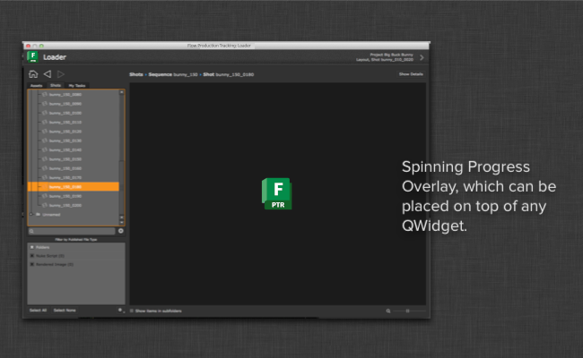

Text Overlay Widget¶
Introduction¶
The progress overlay module provides a standardized progress overlay widget which
can easily be placed on top of any other PySide.QtGui.QWidget to indicate that work is happening
and potentially report messages back to the user. Once you have instantiated and
placed it on top of another widget, you can execute various methods to control its state.
Sample Code¶
The following sample code shows how to import the overlay module, connect it to a widget and then control the overlay state:
# example of how the overlay can be used within your app code
# import the module - note that this is using the special
# import_framework code so it won't work outside an app
overlay = sgtk.platform.import_framework("tk-framework-qtwidgets", "overlay_widget")
# now inside your app constructor, create an overlay and parent it to something
self._overlay = overlay.ShotgunOverlayWidget(my_widget)
# now you can use the overlay to report things to the user
try:
self._overlay.start_spin()
run_some_code_here()
except Exception, e:
self._overlay.show_error_message("An error was reported: %s" % e)
finally:
self._overlay.hide()
Please note that the example above is crude and for heavy computational work we recommend an asynchronous approach with a worker thread for better UI responsiveness.
ShotgunSpinningWidget¶
-
class
overlay_widget.ShotgunSpinningWidget(parent)[source]¶ Bases:
PySide2.QtWidgets.QWidgetOverlay widget that can be placed on top over any QT widget. Once you have placed the overlay widget, you can use it to display a spinner or report progress in the form of an arc that goes from 0 to 360 degrees.
Parameters: parent ( PySide.QtGui.QWidget) – Widget to attach the overlay to-
start_spin()[source]¶ Enables the overlay and shows an animated spinner.
If you want to stop the spinning, call
hide().
-
start_progress()[source]¶ Enables the overlay and shows an animated progress arc.
If you want to stop the progress, call
hide().
-
ShotgunOverlayWidget¶
-
class
overlay_widget.ShotgunOverlayWidget(parent)[source]¶ Bases:
PySide2.QtWidgets.QLabelOverlay widget that can be placed on top over any QT widget. Once you have placed the overlay widget, you can use it to display information, errors, a spinner etc.
The
show_message()andshow_error_message()accept both regular text and HTML to format the error message.Constants
INFO_COLORandERROR_COLORare provided on the class as shorthand for the colors employed by theshow_message()andshow_error_message()methods.Parameters: parent ( PySide.QtGui.QWidget) – Widget to attach the overlay to-
start_spin()[source]¶ Enables the overlay and shows an animated spinner.
If you want to stop the spinning, call
hide().
-
show_error_message(msg)[source]¶ Enables the overlay and displays an a error message centered in the middle of the overlay.
Parameters: msg – Message to display
-
show_message(msg)[source]¶ Display a message centered on the overlay. If an error is already being displayed by the overlay at this point, nothing will happen.
Parameters: msg – Message to display Returns: True if message was displayed, False otherwise
-
ShotgunModelOverlayWidget¶
-
class
overlay_widget.ShotgunModelOverlayWidget(sg_model, parent=None)[source]¶ Bases:
overlay_widget.shotgun_overlay_widget.ShotgunOverlayWidgetA convenience class specifically designed to work with a
ShotgunModel.By using this class, multiple overlay widgets can be easily created and connected to the same shotgun model.
Parameters: - sg_model (
ShotgunModel) – Shotgun model that this widget should connect to - parent (
PySide.QtGui.QWidget) – Widget to attach the overlay to
-
set_model(sg_model)[source]¶ Set the model this widget should be connected to
Parameters: sg_model ( ShotgunModel) – Shotgun model that this widget should connect to
- sg_model (